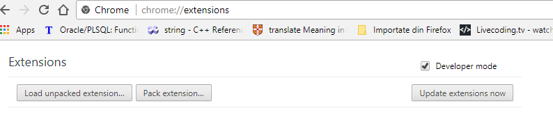
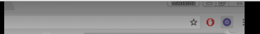
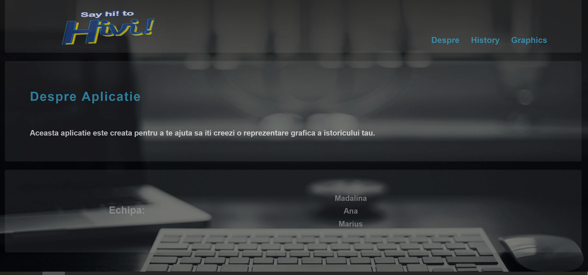
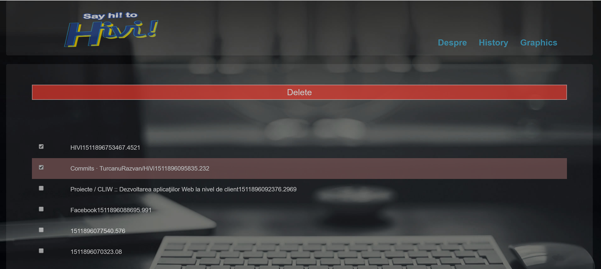

Web Browser History Visualizer
How does it work?
The guideline for every marvellous human being.
Firstly, you need to download the zip archive. Please unzip it. Then you should go to chrome://extensions. Please, click on the developers mode check-box. A menu for uploading the extension will be displayed by default.
An icon will be displayed on the browser toolsbar. The icon looks like in image above.
Please click on it. A pop-up with a button will be displayed to acces the history. This is displayed in the image above.

After clicking on the pop-up button the HiVi will be revealed. The user will have displayed a describing page of the HiVi.
This page relate about the purpose of extension and has three important linking buttons:
- About
- History
- Export
After clicking the second button the user will be lead to his navigation history where he can delete some of his unwanted to be displayed links. Because we all know that "a picture worth a thousand words", we will let you to see how does it works.
The third button will reveal "the heart of the HiVi", the Graph Representation of the history along the exporting part, where the user can see his main domains searched exported into SVG or PNG format.

Conclusion
In conclusion, this browser web extension will have multiple manners of displaying the history of navigation. The most interesting thing is that the user is able to extract all the relevant information in a SVG or PNG file.
A better version of this extension could be to storage in cloud for the user bookmarks.